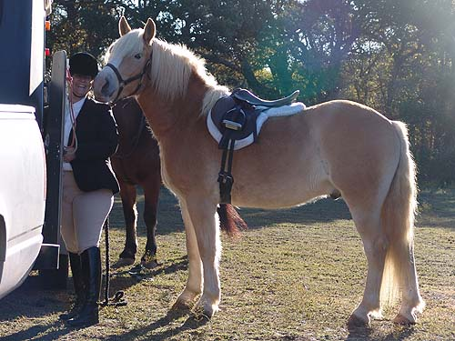

Niles - Fox Hunting Niles' first time out fox hunting went
very well.
He seems to love the excitement and the
chance
to be out with his other horsey friends.
We hit some trails that were marked for
the more
advanced horses, but Niles was brave enough
to
cross the deep creek (with a jump and
a splash)
and climbed his way up the rocky trails
without hesitating.
He stayed with his group easily, happily
trotting and
cantering along when necessary.
Next week he'll be braided up for opening
meet. Hopefully
we'll have more pictures.
Katie was very careful with Niles.
Here she's stretching out his front leg so the girth doesn't pinch.

Smiling for the camera (can't you
see Niles' smile?).
Showing Niles around before mounting
up. Niles is 14.2, but sometimes he seems much bigger.
Getting settled in the saddle.
Figuring out where to gather.
Niles appeared to have a great time
out hunting. He tackled rocky hills and creek crossings, and was very curious
about the hounds and other horses. Everything just seemed to be a treat
to him.
Niles and Angel and Katie and Jake.
The were both in Third Flight and had
a lovely day.